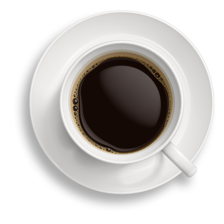

Утро начинается с кофе
Кофе вреден или полезен?
Однозначных исследований о вреде или пользе кофе нет, и все время появляются новые. Например, есть данные, что те, кто выпивает по три чашки в день, менее подвержены депрессии, чем те, кто ограничивается одной или вовсе не пьет кофе. Однако другие специалисты доказали, что напиток повышает тревожность. А значит, его не стоит употреблять в стрессовые периоды. В разных регионах мира к кофе тоже относятся по-разному. Доктора в Китае говорят, что он вреден. Но там исторически пьют больше чая, и чайное лобби в этой стране более сильное. В Италии, наоборот, кофе считается полезным напитком. В Америке мнение специалистов разделилось 50 на 50. Если вы ведете правильный образ жизни и у вас нет проблем со здоровьем, кофе даже в большом количестве вряд ли вам навредит. Но все же стоит прислушиваться к своему организму – реакция у всех индивидуальная.

Немного фактов
- 1.Каждый год в мире выпивается более 500 млрд. чашек кофе.
- 2.Добавлять молоко в кофе стали в 17 веке. Такой рецепт выписывал своим пациентам один французский врач.
- 3.Первая веб-камера была разработана в Кембриджском университете, чтобы определять на расстоянии, заполнена или пуста университетская кофеварка.
- 4.Итальянцы пьют кофе с сахаром, мексиканцы – с корицей, немцы и швейцарцы – с горячим шоколадом, бельгийцы – в прикуску с шоколадкой. Эфиопы добавляют в кофе соль, а марокканцы – перец. На Ближнем Востоке в кофе зачастую добавляют кардамон или другие специи. Кофе со взбитыми пьют австрийцы. Египтяне же предпочитают «чистый» крепкий кофе, добавляя туда по желанию сахар, молоко, сливки, кардамон.